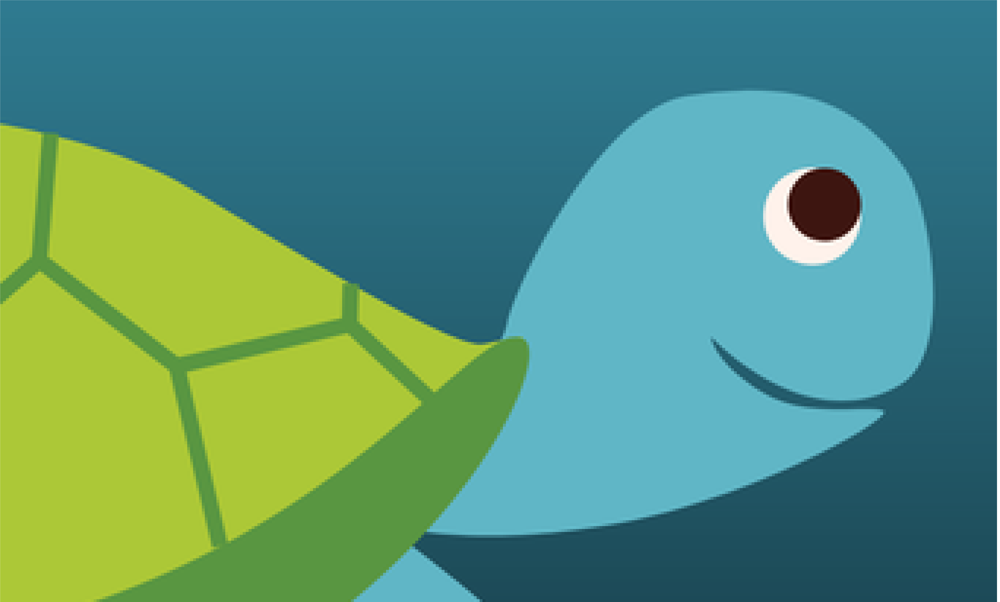

Jag studerar programmering för iOS och Android med SwiftUI, UIKit och Kotlin. Nedan kommer ni hitta både projekt som är färdiga och publicerade och pågående. Projekt byggda med Kotlin kommer inom kort.
Avslappen är appen som du kan ladda ned fritt för att lyssna på avslappningsövningar. Jag har gjort en retouch av Avslappen, en app med meditativa övningar som släpptes 2018, med ny design, nytt premiumläge och UX-förbättringar. Min nya version kommer släppas på AppStore inom kort.
Make your grocery shopping easier with Basket! Basket är mitt första projekt i SwiftUI och är en snabb och simpel shoppinglista med koppling mot Firebase. Alla komponenter förutom tick-boxen och loggan är skapade med kod i SwiftUI.
Låt skrattfesten börja! Välj en historia, fyll i de tomma orden och få sedan historien uppläst av Siri i slutet. Storytajm var mitt första projekt och är en Mad Libs-app som använder sig av Basic UIKit funktioner och layout.

Bazug är ett barnspel skapat i grupp med tre andra klasskamrater med SwiftUI. Ett Shape-sorterspel med djur som använder sig av Drag/Drop funktionalitet. Spelet är anpassat för att spelas på iPads.